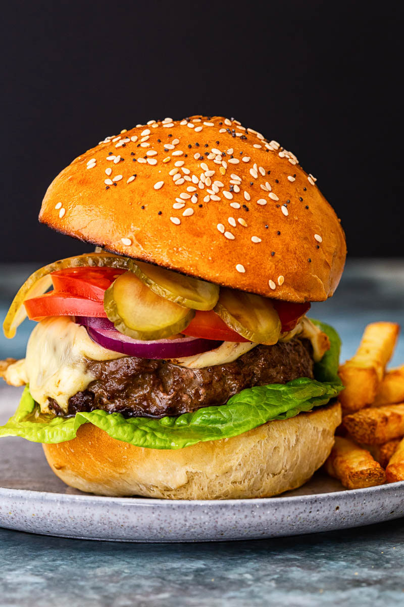

Burgers

The burger is the PERFECT food. With thousands of combos anyone can enjoy a burger no matter how picky your tastes
INGREDIENTS
- 1 pound ground lean (7% fat) beef
- 1 large eg
- 1/2 cup minced onion
- 1/4 cup fine dried bread crumbs
- 1 tablespoon Worcestershire
- 1 or 2 cloves garlic, peeled
- 1/2 teaspoon salt
- 1/4 teaspoon pepper
- 4 hamburger buns, split
- About 1/4 cup ketchup
- 4 iceberg lettuce leaves, rinced and crisped
- 1 firm-ripe tomato, cored and thinly sliced
- 4 thin slices red onion
STEPS
- Mix ground beef,egg,onion,bread crumbs,worcestershire, garlic, 1/2 teaspoon salt, and 1/4 teaspoon pepper into a bowl until well belnded
- Divide mixture into four equal portions and shape into a 4 inch wide patty
- Lay burgers on an oiled barbecue grill on high heat and close lid
- Cook burgers turning once, until browned on both sides and no longer pink (7-9 Mnutes)
- Lay bun, cut side down on grill and cook until lightly toasted (1 minute)
- Spread mayo and ketchup on bun bottoms, add letus tomato burger onion and salt and pepper for the taste
- Serve on a plate and dig in!
NOTES
Everyone knows burgers go with fries or onion rings as your side. The burger really is versatile. My personal favourite is adding some cheese,bacon and some barbecue sauce